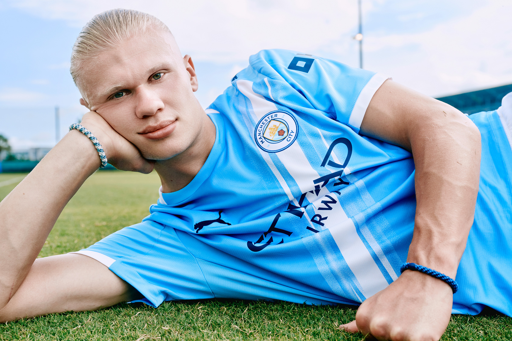
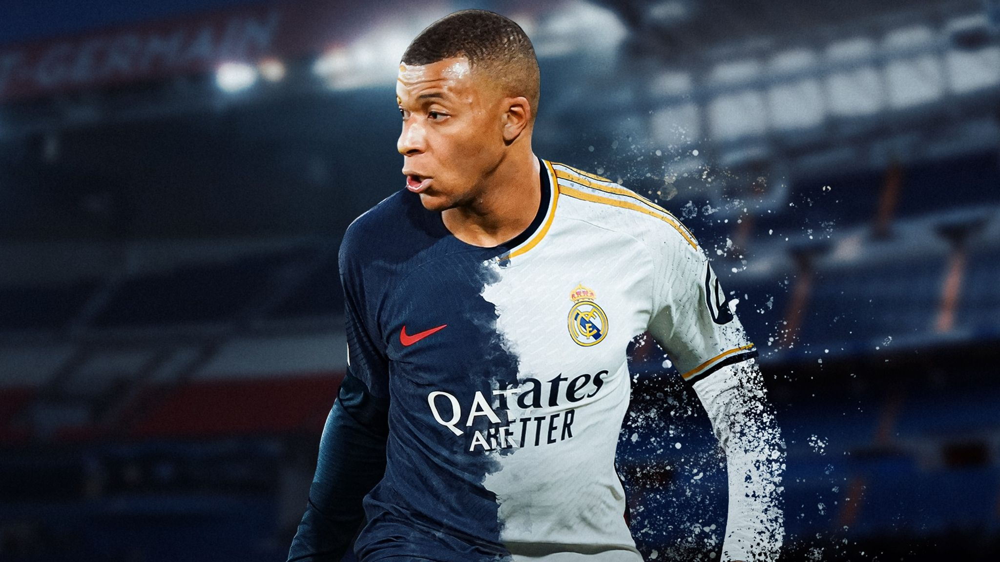
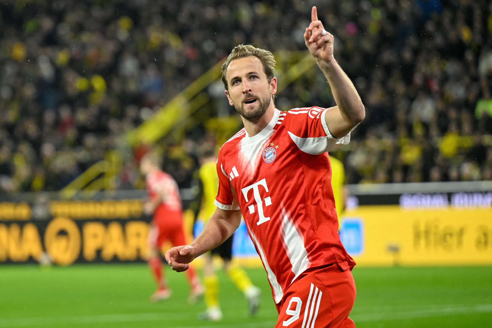

As of May 2026, association football, or soccer, is arguably at its most exciting point in a generation, serving as the world's most popular sport with an estimated 250 million active players. Generally, the sport is governed globally by FIFA, which oversees everything from basic rules to the prestigious FIFA World Cup.

Football Stars
- Erling Haaland:Known as "The Terminator," Haaland continues to rewrite the Premier League record books. He remains the most efficient pure finisher in the game, often scoring with minimal touches. Continuing his dominance at Manchester City, Haaland remains a "goal-scoring machine," consistently leading the Premier League Golden Boot race
- Kylian Mbappé:Mbappé has seamlessly transitioned into his role as the face of the new "Galácticos." His first full season in Madrid has been defined by high-volume scoring and a record-breaking Champions League campaign. Since his move to Real Madrid, Mbappé has solidified his status as the world’s most lethal forward, recently finishing the 2025 calendar year as the global top scorer with 66 goals.
- Harry Kane:At 32, Kane is arguably in the best form of his career, currently leading the race for the European Golden Shoe. He has become the focal point of Bayern Munich's dominance in Germany. The Bayern Munich striker is the current Ballon d'Or favorite following an extraordinary season with 45 goals in 37 games.



Last championships
World cup 2022
The 2022 FIFA World Cup was the 22nd edition of the world championship for men's national football teams, held in Qatar from November 20 to December 18, 2022. It made history as the first World Cup to be hosted in the Middle East and the Arab world, and it was uniquely scheduled during the winter months to avoid Qatar's intense summer heat. The tournament featured 32 teams competing in 64 matches across eight state-of-the-art stadiums, all located within a 50-kilometer radius of Doha, making it the most geographically compact event since 1930.The tournament concluded with a highly dramatic final at Lusail Stadium, where Argentina defeated the defending champions, France, in a penalty shootout after a 3–3 draw. This victory secured Argentina’s third World Cup title and was a career-defining moment for Lionel Messi, who was awarded the Golden Ball as the tournament's best player . France's Kylian Mbappé won the Golden Boot as the top scorer, notably becoming the second player ever to score a hat-trick in a World Cup final. Beyond the finalists, the event was marked by Morocco’s historic run as the first African and Arab nation to reach a semi-final. Official records from FIFA also show a record-breaking 172 total goals scored and nearly 3.4 million spectators in attendance
.jpg)